무엇을 만드나요
이 영상은 할 일(task)을 저장하는 작은 앱 하나를 만들고, 그 앞에 MCP(Model Context Protocol) 서버를 세운 뒤 세 종류의 클라이언트로 써 보는 실습이에요. 발표자는 먼저 완성된 모습을 그린 아키텍처 보드부터 보여 줘요.
보드는 세 칸이에요. 왼쪽 Clients and MCP에는 Python FastMCP 클라이언트(client.py), Codex, LangChain 에이전트(langchain_client.py)가 있어요. 가운데 FastMCP server · server.py에는 127.0.0.1:8000/mcp 엔드포인트와 등록된 도구 세 개(create_task, list_tasks, update_task_status)가 있어요. 오른쪽 Persistence는 database.py와 SQLite 파일 data/tasks.db예요. 맨 아래 한 줄이 흐름을 요약해요. 클라이언트 요청 → MCP 도구 → DB(Database) 함수 → SQLite이고, 결과는 같은 MCP 엔드포인트로 돌아와요.
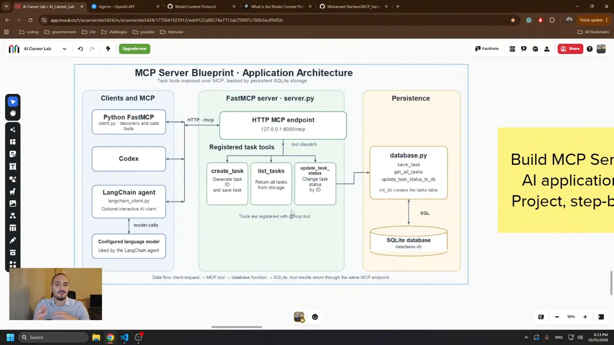
진행 순서는 로드맵 보드에 색깔별 여섯 줄로 정리돼 있어요. 보라색 프로젝트 준비(Python, uv, VS Code, FastMCP 설치), 분홍색 MCP 서버와 첫 도구, 파란색 별도 클라이언트와 list_task·update_task_status, 초록색 SQLite 저장, 노란색 LangChain 에이전트, 빨간색 Codex 연결이에요.
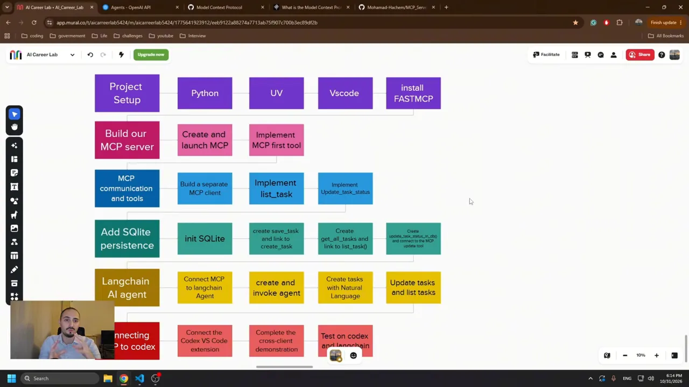
시작 전에 발표자가 당부하는 게 있어요. AI(Artificial Intelligence) 도구에 프로젝트를 맡기지 말고 직접 한 줄씩 써 보라는 거예요. 한 번에 다 하지 않고 하루 한 시간씩 나눠도 된다고 해요. 그래서 Codex에 MCP를 붙이는 마지막 장면을 빼면 영상 내내 코드는 손으로 쳐요.
MCP는 AI 앱의 USB-C
발표자는 MCP를 깊게 파고 싶으면 공식 사이트와 GitHub 저장소를 읽으라고 하고, 핵심은 한 문장으로 정리해요. MCP는 AI 앱을 위한 USB-C 포트라는 거예요. 화면에 띄운 공식 문서에도 그 문장이 그대로 있어요. 가운데 MCP 상자를 두고 왼쪽에 채팅 앱·IDE(Integrated Development Environment) 같은 AI 앱, 오른쪽에 데이터·개발 도구·생산성 도구가 이어진 그림이 함께 있어요.
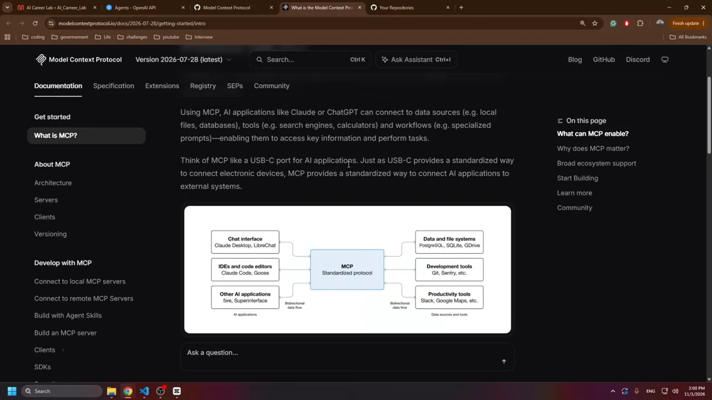
발표자의 설명은 이래요. 여러 일을 할 수 있는 앱이 있다고 해 볼게요. 에이전트나 다른 클라이언트가 이 앱을 정해진 방식으로만 쓰게 하고 싶다면, 앱 앞에 MCP를 꽂아 두면 돼요. 그러면 연결은 플러그를 꽂듯 끝나요. 이 영상에서는 그 '앱'이 할 일 DB이고, 마지막에는 에이전트에게 말로 시키기만 해도 MCP를 거쳐 DB가 바뀌는 걸 보여 줘요.
완성 코드는 발표자의 GitHub 저장소 MCP_Server_BluePrint에 올라가 있어요. 화면에는 data, src/mcp_server_blueprint, .mcp.json, pyproject.toml, uv.lock 같은 파일이 보여요.
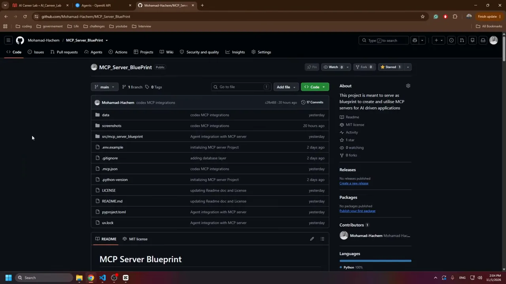
src/mcp_server인데, 저장소에서는 src/mcp_server_blueprint예요. 따라 칠 때 경로를 헷갈리지 않게 보세요.
영상 06:57에서 보기프로젝트 준비
VS Code에서 작업 폴더를 열고 터미널에서 Python과 패키지 관리자 uv가 있는지부터 확인해요. 그다음 uv venv --python 3.12로 가상환경을 만들고 uv init으로 프로젝트를 초기화해요. 발표자는 3.12를 쓰지만 3.11~3.13이면 된다고 해요.
.env와.env.example을 만들어요 — 둘 다OPENAI_API_KEY=""한 줄이에요..env.example은 저장소를 받은 사람이 복사해 쓰라고 두는 견본이에요..gitignore에.env를 넣어요 — 키가 저장소에 올라가지 않게 해요.- OpenAI 대시보드에서 API(Application Programming Interface) 키를 새로 만들어요 — 발표자는 만료 1일짜리 키를 만들고 영상 공개 전에 폐기하겠다고 해요.
- 필요한 패키지를 한 번에 설치해요 — 하나씩 필요할 때 깔아도 되지만 발표자는 처음에 다 깔아 둬요.
uv sync와uv lock이 'Resolved 97 packages'로 끝나요
아래 터미널 첫 줄이 설치 명령이에요. dotenv, langchain, langchain-openai, langchain[mcp], uuid, asyncio, fastmcp 일곱 개를 한 줄로 넣었어요. 왼쪽 탐색기에는 src/mcp_server/__init__.py와 .env, pyproject.toml, uv.lock이 생겼어요.
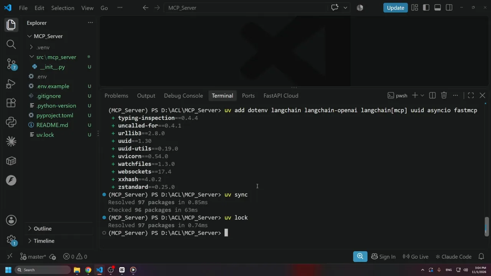
uv sync, uv lock으로 잠금 파일까지 맞춰 둬요.
영상 10:28에서 보기database.py: 할 일 테이블과 함수 네 개
MCP 서버는 '앱과 클라이언트 사이'에 서는 층이라, 먼저 그 뒤에 있을 앱이 필요해요. 여기서는 src/mcp_server/database.py 하나가 앱 역할을 해요. SQLite를 고른 이유는 가볍고 바로 쓸 수 있어서라고 해요.
할 일 테이블
할 일 하나는 다섯 칸으로 이뤄져요. 아래 화면의 CREATE TABLE IF NOT EXISTS tasks 안을 보면 task_id가 기본 키이고, priority는 기본값 'medium', status는 기본값 'todo'예요. 파일 위쪽에서는 Path(__file__).resolve().parents[2]로 프로젝트 루트를 잡고 data/tasks.db를 DB 경로로 정해요.
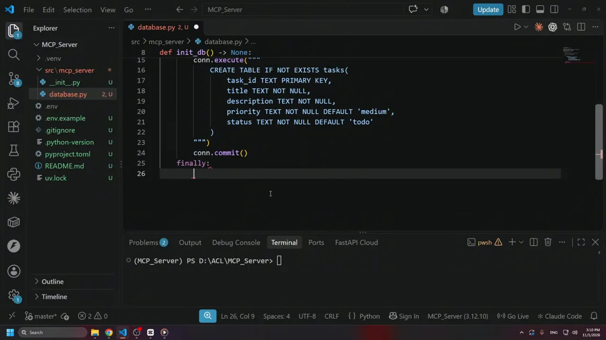
todo·in progress·done 셋만 쓰기로 엄격하게 정하고, 우선순위(low~high)는 느슨하게 둬요.
영상 16:41에서 보기함수 네 개
이후 MCP 도구는 모두 이 함수들을 부르기만 해요. 그래서 이 표가 곧 앱이 할 수 있는 일의 전부예요.
| 함수 | 받는 것 | 하는 일 | 돌려주는 것 |
|---|---|---|---|
init_db() | 없음 | data/ 폴더를 만들고 테이블이 없으면 만들어요 | None |
save_task(task) | 다섯 키를 가진 딕셔너리 | INSERT INTO tasks … VALUES (?, ?, ?, ?, ?) | None |
update_task_status_in_db(task_id, status) | ID(Identifier)와 새 상태 | UPDATE 후 같은 행을 다시 SELECT | 바뀐 행 딕셔너리, 없으면 에러 딕셔너리 |
get_all_tasks() | 없음 | SELECT * FROM tasks | 딕셔너리 리스트 |
갱신 함수에서 발표자가 짚는 두 가지가 아래 화면에 다 있어요. 하나는 위쪽에서 건 conn.row_factory = sqlite3.Row예요. 이 row_factory 설정을 걸어야 조회 결과를 튜플이 아닌 딕셔너리로 바꿀 수 있어요. 다른 하나는 71번 줄 (task_id,)의 쉼표예요. 쉼표가 없으면 괄호가 튜플로 인식되지 않아요. 결과를 fetchone()으로 받고, 연결을 닫은 뒤 record가 None이면 존재하지 않는 ID라는 에러를 돌려줘요.
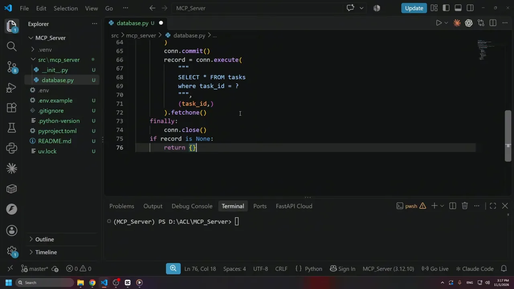
try 안에서 실행하고 finally에서 연결을 닫는 같은 모양이에요.
영상 23:41에서 보기직접 돌려 보며 고치기
서버를 만들기 전에 if __name__ == "__main__": 블록에서 함수를 직접 불러 봐요. 테스트용 할 일의 ID는 일단 "1"로 넣고, 진짜 고유 ID는 나중에 서버에서 만든다고 해요. 오류도 몇 번 나요. INSERT 문의 VALUES 철자 오류, 들여쓰기 오류, 그리고 갱신 함수에 딕셔너리를 통째로 넘겨서 생긴 오류예요.
아래 터미널 위쪽이 마지막 오류인 missing 1 required positional argument: 'status'예요. 코드를 task_id="1", status="done" 키워드 인자로 바꾸자, 아래 두 줄처럼 같은 할 일의 status가 'to do'에서 'done'으로 바뀌어 찍혀요.
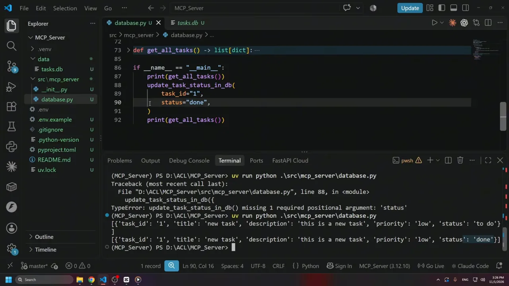
tasks.db를 열어 표로도 확인해요.
영상 32:20에서 보기참고로 이 테스트 행의 상태는 띄어 쓴 'to do'로 들어갔어요. 테이블 기본값 'todo'와 다른 철자예요. 이 차이는 서버를 만들 때 다시 나와요.
server.py: FastMCP로 첫 도구 만들기
이제 앱 앞에 MCP 서버를 세워요. server.py에서 FastMCP("MCP SERVER ACL")로 서버를 만들고, database.py의 함수들을 가져와요. ID 생성용으로 uuid4를, 나중에 상태 값을 묶을 Literal도 미리 가져와 둬요.
도구의 이름과 설명이 중요한 이유
함수 위에 @mcp.tool(name=…, description=…)을 붙이면 그 함수가 MCP 도구가 돼요. 발표자는 여기서 가장 길게 멈춰요. 에이전트는 도구의 이름과 설명을 읽고 '이 일에 이 도구가 맞나'를 판단해요. 그러니 이름과 설명, 함수 안의 독스트링을 분명하게 써야 한다는 거예요. 설명과 독스트링이 겹쳐도 괜찮다고 해요. 문서화 습관을 들이는 게 낫다고요.
이 지점이 MCP의 핵심이라고도 말해요. 앱 주인이 어떤 기능을 어떤 모양으로 열지 직접 정해요. 그러면 다른 사람은 연동 코드를 새로 짜지 않고 도구만 보고 앱을 쓸 수 있어요.
첫 도구 create_task
아래 화면이 완성된 첫 도구예요. 인자는 title, 기본값 "medium"인 priority, 빈 문자열이 기본인 description이에요. 18번 줄에서 str(uuid4())로 ID를 만들고, 19번 줄에서 상태를 고정해요. 사용자가 ID를 정하게 두면 겹칠 수 있어서 서버가 만드는 거예요. 상태를 고정하는 이유는 막 만든 일이 곧바로 진행 중일 수는 없어서예요. 딕셔너리를 만들어 save_task(task)로 저장하고, 확인하기 좋게 task를 돌려줘요.
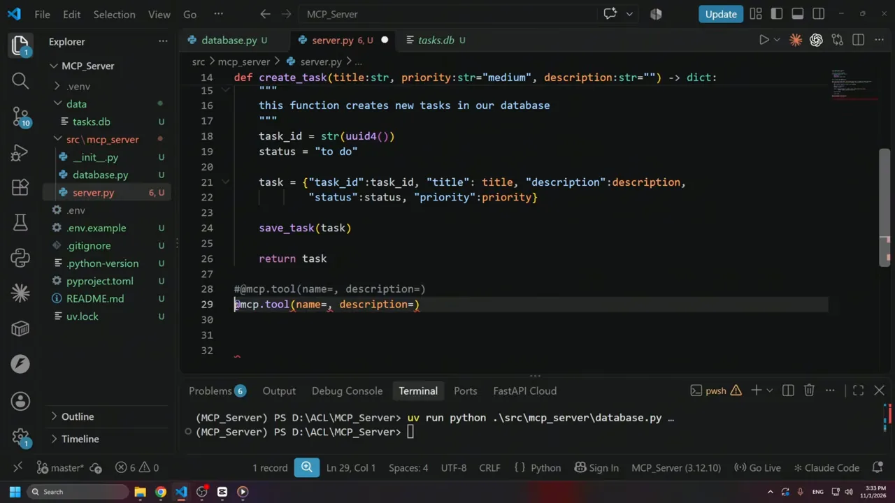
"to do"예요. 발표자는 53분쯤 이걸 "todo"로 고쳐요. 테이블 기본값과 철자를 맞추려는 거예요.
영상 40:02에서 보기HTTP로 서버 띄우기
파일 끝에 mcp.run(transport="http", port=8000)을 두고 uv run python .\src\mcp_server\server.py로 실행해요. 처음엔 포트가 이미 쓰이고 있어서 몇 번 다시 띄워요. 아래 화면의 터미널에는 Starting MCP server 'MCP SERVER ACL' with transport 'http' on http://127.0.0.1:8000/mcp가 찍혀 있어요. 위쪽 브라우저 탭에서 그 주소를 열자 Bad Request: Missing session ID가 떠요.
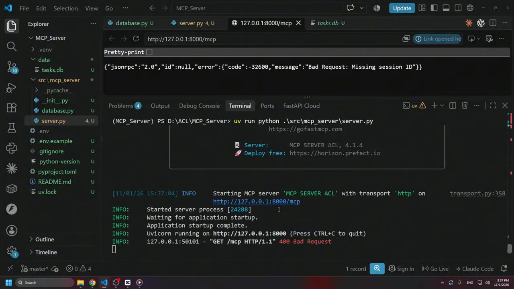
client.py: 도구를 코드로 불러 보기
서버를 다 만들기 전에, 발표자는 클라이언트부터 하나 만들어 서버가 실제로 도는 걸 보여 주기로 해요. client.py는 FastMCP의 Client로 서버 주소에 붙는 파일이에요.
코드로 도구 부르기
아래 화면 5번 줄에서 Client("http://127.0.0.1:8000/mcp")로 클라이언트를 만들어요. 7번 줄부터는 async def create_task_using_mcp() 안에서 async with client:로 연결을 열어요. 그 안에서 await client.call_tool("create_task", {...})를 불러요. 두 번째 인자 딕셔너리가 도구가 요구하는 값이에요. 여기서는 title "task2", priority "high", 그리고 설명 한 줄을 넣어요.
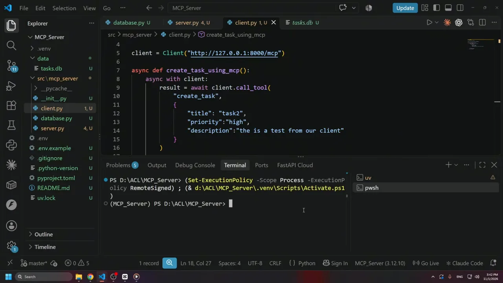
"create_task"로 불러요. 클라이언트는 서버 내부를 몰라도 돼요.
영상 48:33에서 보기비동기로 쓰는 이유도 설명해요. 서버에 여러 가지를 동시에 물어볼 수 있고, 응답을 기다리는 동안 Python이 다른 일을 할 수 있어요. 사용자가 여럿일 때 특히 중요하다고 해요. 처음 실행하면 아무 일도 안 일어나는데, __main__에서 asyncio.run()으로 함수를 돌리지 않았기 때문이에요.
다시 돌리면 서버 로그에 POST /mcp가 200 OK로 세 줄 찍혀요. DB 뷰어의 두 번째 행에는 UUID(Universally Unique Identifier) ID를 단 task2가 생겨요. 첫 행의 ID 1과 비교하면 서버가 만든 진짜 고유 ID가 어떻게 생겼는지 보여요.
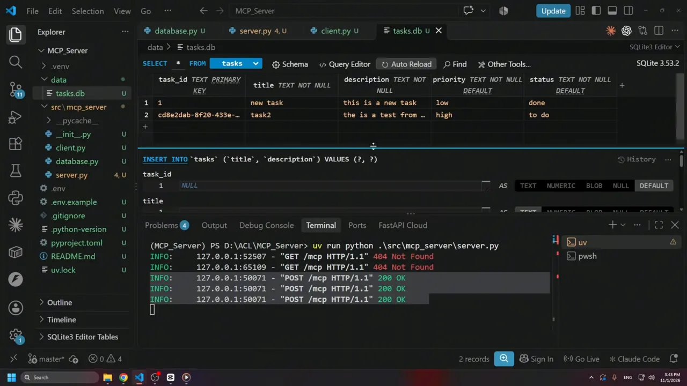
save_task → SQLite로 한 바퀴가 처음 돈 순간이에요.
영상 50:00에서 보기도구 두 개 더 붙이기
서버로 돌아가 나머지 도구를 붙여요. 아래 화면 28번 줄 list_tasks는 독스트링 하나와 return get_all_tasks()뿐이에요. 35번 줄 update_task_status는 task_id와 status를 받는데, status 타입을 Literal["todo", "in progress", "done"]으로 정했어요. 아무 문자열이나 받지 않으려는 거예요.
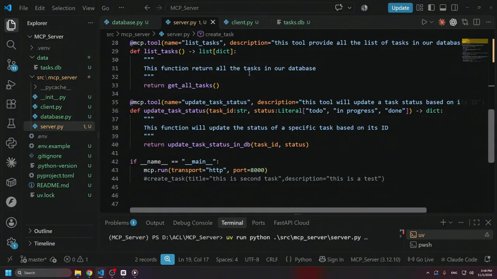
database.py가 하고, 서버는 어떤 기능을 어떤 이름으로 열지만 정해요.
영상 54:33에서 보기이 무렵 발표자는 create_task의 상태 값을 "todo"로 고쳐요. 그러면서 실무에서는 Pydantic 같은 도구로 스키마를 제대로 검증하는 게 낫다고 덧붙여요. 이번엔 MCP 자체를 이해하는 게 목적이라 단순하게 간다고요.
세 도구를 서버에 나란히 놓으면 이렇게 정리돼요.
| MCP 도구 | 인자 | 부르는 DB 함수 | 영상에서 쓴 설명(description) |
|---|---|---|---|
create_task | title, priority="medium", description="" | save_task | this tool is created to create new tasks |
list_tasks | 없음 | get_all_tasks | this tool provide all the list of tasks in our database |
update_task_status | task_id, status(Literal 세 값) | update_task_status_in_db | this tool will update a task status based on its ID |
서버에서 도구 목록 받기
다음으로 get_tools_from_server()를 만들어요. await client.list_tools()로 서버의 도구 목록을 받아 이름을 찍어요. 서버를 다시 띄우고 실행하면 아래 터미널 마지막 세 줄처럼 create_task, list_tasks, update_task_status가 나와요. 그 위 줄은 바로 전에 create_task를 불러 받은 딕셔너리예요.
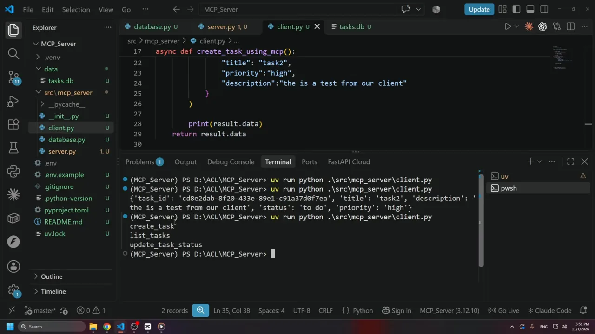
'never awaited' 경고와 해결
이어서 update_task_status_from_mcp()(task2를 "in progress"로)와 list_tasks_using_mcp()를 만들어요. 목록 → 갱신 → 목록 순으로 부르는데 RuntimeWarning: coroutine '…' was never awaited가 나요. 발표자도 한동안 헤매다 원인을 찾아요. 비동기 함수를 그냥 호출하면 코루틴 객체만 생기고 실행되지 않아요. 각 호출을 asyncio.run()으로 감싸야 해요.
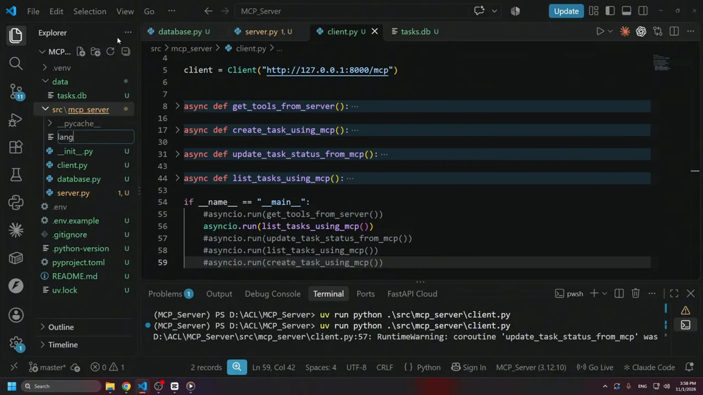
asyncio.run(…)으로 감싸고, 필요한 것만 주석을 풀어 돌리는 방식이에요.
영상 01:05:03에서 보기고친 뒤 실행하면 DB에서 task2의 상태가 in progress로 바뀌어 있어요. 이것으로 클라이언트 코드만으로 도구 세 개를 모두 써 봤어요.
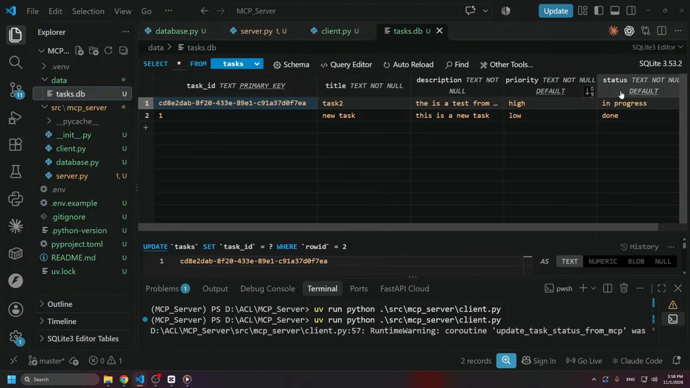
LangChain 에이전트로 말로 시키기
이제 같은 서버를 전혀 다른 클라이언트에서 써 봐요. langchain_client.py는 OpenAI 모델을 쓰는 LangChain 에이전트예요. 이번엔 도구를 부르는 함수를 하나도 짜지 않아요.
MCPAdapter로 도구 받기
아래 화면이 가져오는 모듈들이에요. 6번 줄 from langchain.mcp import MCPAdapter가 MCP 서버와 LangChain을 잇는 부분이에요. 그 밖에 create_agent, HumanMessage, InMemorySaver를 가져오고, load_dotenv()로 .env의 OpenAI 키를 읽어요. 12번 줄에서 MCPAdapter에 넣을 주소는 client.py와 같은 http://127.0.0.1:8000/mcp예요.
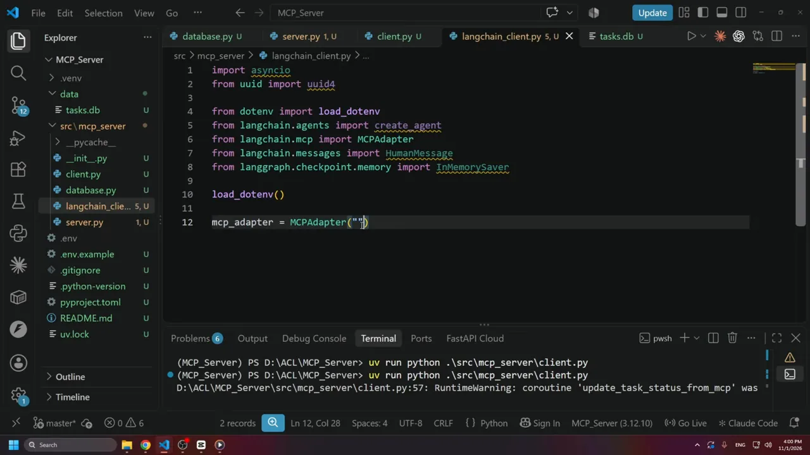
main() 안에서는 async with mcp_adapter:로 연결을 열고 tools = await mcp_adapter.list_tools()로 도구를 받아요. 그걸 그대로 create_agent에 넘겨요. 발표자는 앞의 client.py와 비교해요. 거기서는 도구마다 함수를 만들었지만, 여기서는 도구 목록만 넘기면 에이전트가 알아서 고른다는 거예요.
아래 화면이 에이전트 설정과 대화 루프예요. 모델은 "gpt-6-luna"인데, 발표자는 저렴해서 권한다고 해요. 시스템 프롬프트는 'helpful task management assistant'예요. checkpointer=InMemorySaver()와 25번 줄 thread_id 설정은 대화를 기억하게 하려고 둬요. 앞에서 말한 할 일을 뒤에서 '이거'라고 불러도 알아듣게 하려는 거예요. 28번 줄부터는 q를 칠 때까지 질문을 받아 agent.ainvoke로 보내고 마지막 메시지를 찍어요.
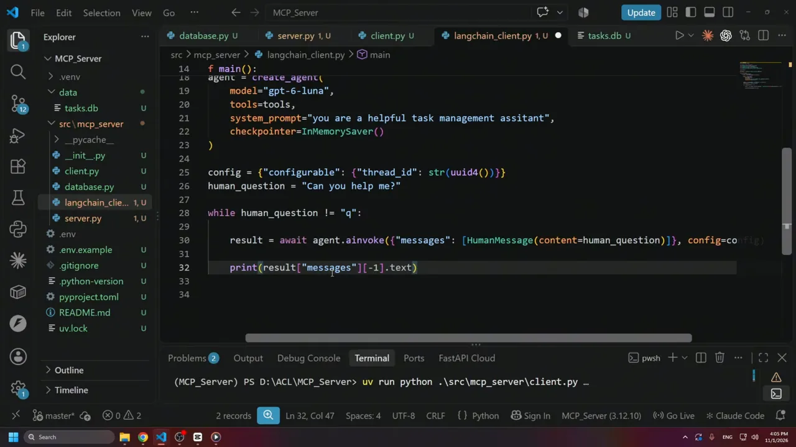
thread_id가 없으면 체크포인터가 대화를 저장할 곳이 없어요. 발표자도 '이게 없으면 동작하지 않는다'고 강조해요.
영상 01:11:43에서 보기질문 한 번이 처리되는 길을 그려 보면 이래요. 발표자가 말로 설명한 흐름을 순서대로 옮겼어요.
sequenceDiagram participant U as 사용자 participant A as LangChain 에이전트 participant M as MCP 서버 (server.py) participant D as SQLite (tasks.db) Note over A,M: 시작할 때 list_tools()로 도구 3개를 받아 둠 U->>A: "cooking이라는 할 일 추가해 줘" A->>A: 도구 이름·설명을 보고 create_task 선택 A->>M: create_task(title="cooking", description=…) M->>D: save_task → INSERT D-->>M: 저장 완료 M-->>A: 만든 task 딕셔너리 A-->>U: "cooking을 medium·todo로 추가했어요"
말로 시켜 보기
실행하면 langchain.mcp가 베타라는 경고가 한 번 뜨고 대화가 시작돼요. "모든 할 일을 보여 줘"라고 하자 에이전트가 list_tasks로 두 개를 가져와요. "표로 다시 보여 줘"라고 하자 아래 화면처럼 ID·Task·Description·Priority·Status 다섯 칸짜리 마크다운 표로 바꿔 보여 줘요.
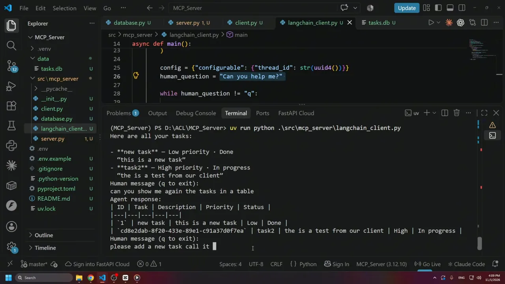
이어서 "cooking이라는 할 일을 추가하고 설명은 '오늘 밤 요리해야 해'로 넣어 줘"라고 하자 DB에 세 번째 행이 생겨요. 우선순위는 기본값 medium, 상태는 todo예요. "이 할 일을 진행 중으로 바꿔 줘"도 그대로 처리돼요. 발표자는 이렇게 강조해요. 이 에이전트는 DB와 아무 관계가 없는데도 MCP를 거쳐 DB를 다뤄요. 서버를 공개된 곳에 올리면 누구나 같은 방식으로 쓸 수 있다고요.
열어 주지 않은 일은 못 해요
마지막 시험이 이 절의 핵심이에요. "cooking의 설명을 'don't forget about the chicken'으로 바꿔 줘"라고 하자 에이전트가 거절해요. 아래 터미널 마지막 응답처럼, 쓸 수 있는 도구로는 설명을 바꿀 수 없다고 답해요. 위쪽 DB에는 cooking이 in progress로 바뀌어 있고 설명은 그대로예요.
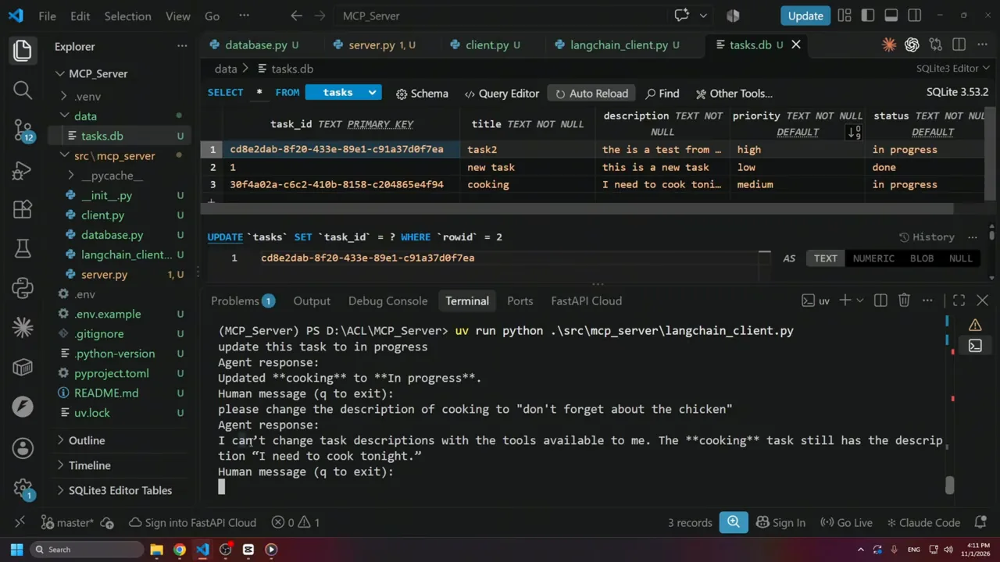
I'm not giving my agent full control. I'm giving my agent exactly the control the agent need.
에이전트에게 전권을 주는 게 아니에요. 에이전트에게 필요한 만큼의 권한만 정확히 주는 거예요.
— 영상 01:17:09
Codex에 같은 서버 붙이기
보너스로 같은 서버를 Codex에도 붙여요. 이번 영상에서 코드를 쓸 때는 Codex를 쓰지 않았고, 완성된 MCP를 Codex 에이전트가 쓰게 하는 장면만 보여 줘요.
서버 등록
먼저 프로젝트 루트에 .mcp.json을 만들어요. 아래 화면처럼 mcpServers 안에 mcp_server_acl을 두고, "type": "http"(트랜스포트)와 "url": "http://127.0.0.1:8000/mcp"를 적어요. 아래 터미널에는 서버가 같은 주소로 떠 있어요.
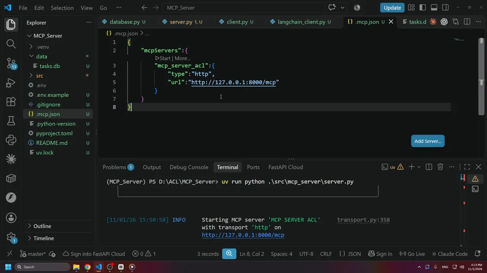
그다음 VS Code의 Codex 설정에서 MCP servers로 가서 서버를 하나 추가해요. 발표자는 원래 쓰던 서버를 끄고 새 서버를 켜요. 아래 화면처럼 Type은 STDIO가 아닌 Streamable HTTP를 고르고, URL(Uniform Resource Locator)에 같은 주소를 넣고 저장해요.
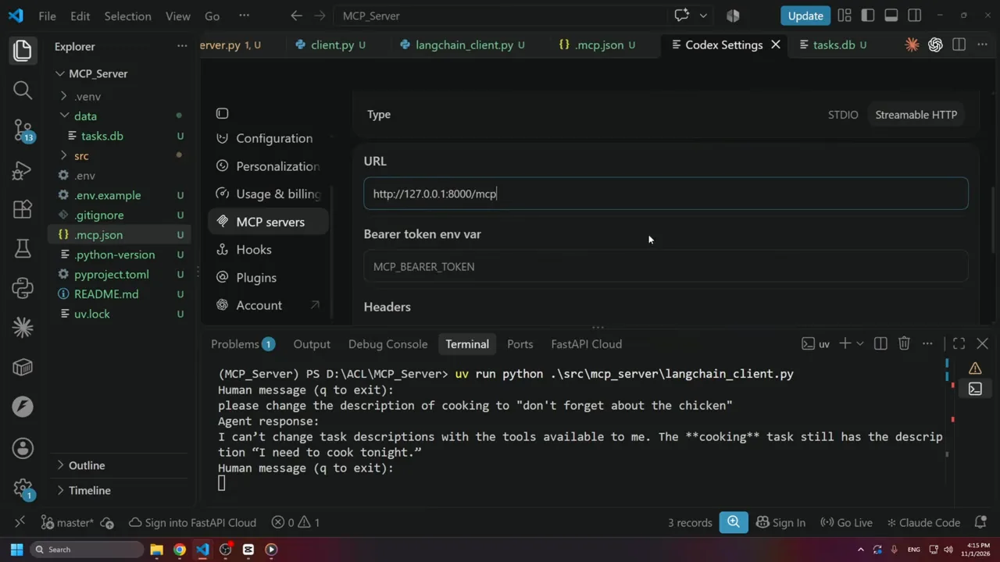
Codex와 LangChain 에이전트를 번갈아 쓰기
Codex 채팅에 "MCP 서버에 연결해서 DB의 할 일을 모두 보여 줘"라고 하자, 아래 화면 오른쪽처럼 할 일 세 개가 표로 나와요. 왼쪽 DB 뷰어의 세 행과 같은 내용이에요.
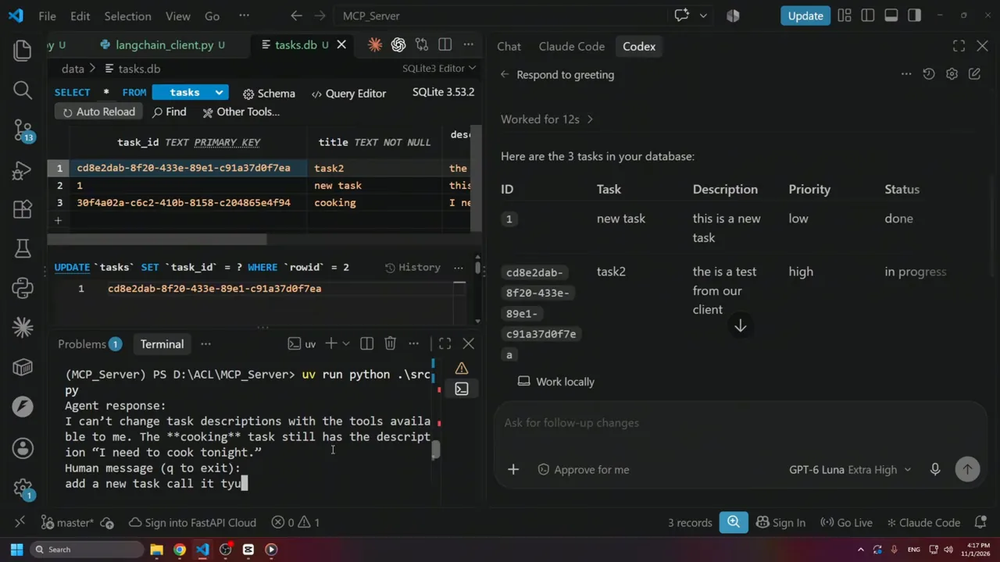
이번엔 LangChain 에이전트에게 MCP_tutorial이라는 할 일을 추가하게 해요. 터미널에 '연결이 원격 호스트에 의해 강제로 끊겼다'는 오류가 찍히지만 할 일은 추가돼요. 발표자는 연결을 다루는 방식에서 생기는 오류라며 넘어가요.
마지막으로 Codex에 "MCP_tutorial의 상태를 done으로 바꿔 줘"라고 하자 바로 처리돼요. 아래 화면 왼쪽 DB의 4번 행 상태가 done이 됐어요. 오른쪽 Codex는 Updated MCP_tutorial to done.이라고 답해요.
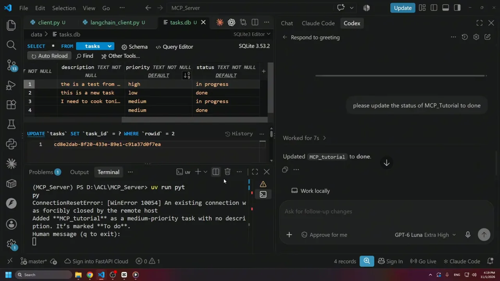
발표자의 마무리도 이 장면에 맞춰져 있어요. 앱을 만들고 맞는 MCP를 만들어 친구·동료·회사와 나누면, 모두가 그 도구로 앱을 쓸 수 있다는 거예요.